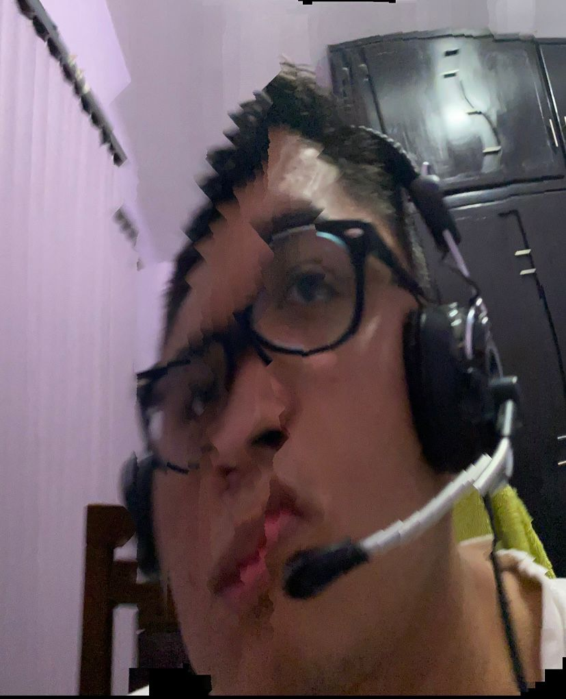

.
Bibliografia Saul Nicolas Aguilar Palma

Saul Nicolas Aguilar Palma
Mi nombre es Saul Nicolas Aguilar Palma
naci en el Estado de Mexico, el 11 de noviembre del 2003
de pequeño vivi en el municipio de Tultitlan, Edo. Mex
estudie en el kinder CIE, despues en la primaria ANNE SULLIVAN
y COLEGIO PIAVE, la secundaria la curse en en COLEGIO PIAVE y
Colegio Miramar, posteriormente en la preparatoria estudie en el
CECyTEM Tecamac en esta parte de mi vida ocurrio un suceso dificil para mi
ya que a esta edad corrio peligro mi vida, fue horrible y muy dificil
mi apendice se rompio y esto ocaciono una perforacio en mi intestino
mi vida corria peligro y estuve apunto de morir, este suceso me marco
ya que desde ese entonces aprendi a valorar mi vida y a darme cuenta que
se debe disfrutar la vida mientras podamos ya que estuve a unas horas de
ya no poder disfrutar la mia, desde ese dia cambie algunas cosa,
actualmente estoy estudiandola universidad en la Universidad
Politecnica de Tecamac en la carrera de Ingenieria en Software,
me gusta el futbol desde pequeño lo practique, jugue para un equipo el cual se
llamaba Pachuca Union Tultepec, jugue varios torneos pero no era el mejor,
el futbol me ayuda a desestresarme, tambien me ayuda el acostarme en el pasto y mirar el cielo.
Mi comida favorita es la pizza y las albondigas, disfruto mucho
pasar tiempo con mi familia y amigos haciendo cosas divertidas
me gusta el clima frio y mi temporada favorita del año es el invierno,
tambien me gusa jugar videojuegos y me gustan mucho los superheroes.
La mayor parte del tiempo estoy jugando y bromeando pero, aveces cuando se que
que tengo trabajo me concentro, tambien me considero una persona creativa,
la mayor parte del tiempo me gusta ayudar a mis amigos como pueda,
aveces doy buenos consejos, me gustaria ayudar a los animales de la calle,
soy algo timido pero me gusta hacer amigos.
En el futuro me gustaria trabajar en algo relacionado a mi carrera, me gustaria
tener una familia y seguir teniendo las amistades que tengo hoy.
Creo que eso es todo hasta hoy.